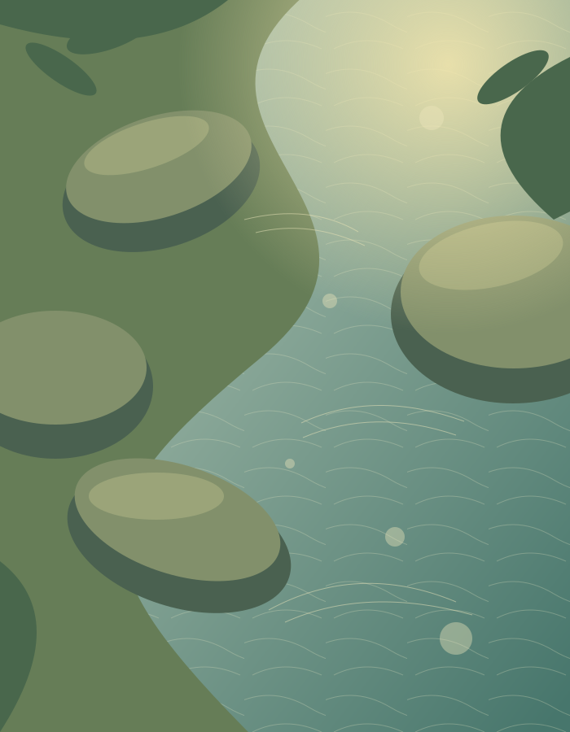

Anxiety & Stress
Persistent worry, panic, overwhelm — these aren't character flaws. A space to explore what drives your anxiety and consider strategies together.

ORIGINAL NATURE ILLUSTRATIONINDIVIDUAL THERAPY · LONDON
Individual therapy for anxiety, burnout, relationships, and life's in-between seasons.
THE FIRST CONVERSATION IS FREEA 20-minute introductory call.
No commitment. Space to see if we fit.
AREAS OF SUPPORT
Persistent worry, panic, overwhelm — these aren't character flaws. A space to explore what drives your anxiety and consider strategies together.
Communication breakdowns, trust, and patterns that keep repeating. Explore what you bring to relationships and what you might want to change.
Career change, loss of identity, exhaustion. Support for navigating the in-between spaces where old maps no longer seem to apply.
Grief has no fixed timeline. Whether a person, a relationship, or a version of yourself — there can be space to feel what you're feeling.
THE PROCESS
A relaxed introduction. Discuss practical questions and whether this approach feels like a fit. This preview doesn't provide clinical advice.
The practice concept offers weekly 50-minute sessions, in central London or by video, with practical details agreed directly.
Work together on insights and tools that fit your circumstances. Experiences and outcomes differ for every individual.
ABOUT YOUR THERAPIST / CONCEPT PROFILE
“What I've learned is that the most important thing isn't technique or theory. It's feeling genuinely heard.”
The supplied profile describes a warm, direct therapist drawing on psychodynamic principles, CBT and, where appropriate, EMDR. Here, that profile is presented as fictional design content.
Qualifications in the brief — BACP accreditation, PG Dip Counselling, EMDR training, CBT practice and ten years' experience — are not verified credentials. This website does not represent a practising clinician.
FEES
Illustrative fees from the practice brief. Insurance panels are not billed directly; reimbursement would need to be checked with your insurer.
| Session | Duration | Fee |
|---|---|---|
| Introductory call | 20 min | Free |
| Individual | 50 min | £80 |
| Couples / relationship | 50 min | £100 |
| Sliding scale | 50 min | From £55 |
Sliding-scale places would be limited. This calculator is a planning estimate, not a treatment recommendation or quote. The introductory call is free; ongoing sessions are paid.
ILLUSTRATIVE CLIENT VOICES / FICTIONAL
“She has this way of reflecting things back that makes you see yourself without judgment.”Anonymous, 34 · fictional brief quote
“It helped me figure out why I'd ended up there in the first place.”Anonymous, 41 · fictional brief quote
“I needed someone to just sit with me in it.”Anonymous, 29 · fictional brief quote
These supplied sample words are not patient testimonials or evidence of clinical outcomes.
TAKE THE FIRST STEP
A free 20-minute introductory conversation. This form only previews your contact preferences locally. Please leave out health information.
Sample contact: hello@claritytherapy.co.uk
This site is not monitored. If you are in immediate danger in the UK, call 999. For urgent support, contact an appropriate local crisis service.